Perfil
Estudiante de Ingeniería en Tecnologías Computacionales con conocimientos intermedios en lenguajes computacionales y diversas herramientas.
Deseo utilizar mi experiencia con estas herramientas para desarrollarme profesionalmente, además de que busco adquirir experiencia con proyectos que fomenten mi emprendimiento y creatividad, a la par de trabajar en los valores fundamentales del trabajo.
Hobbies
- Jugar Videojuegos
- Jugar Futbol
- Leer
- Editar fotos/videos
Juegos Favoritos
- Legend of Zelda Ocarina Of Time
- League of Legends
- Valorant
- Legend of Zelda Majora's mask
Portafolio
Capstone Proyect
Fecha de Creación: Nov 2020
Descripcion:
Se trata de un proyecto donde tenemos un tablero de ajedrez en el cual se encuentra un rey y una reina blancos(K,Q respectivamente), y un rey negro(k), todos colocados de forma random en el tablero.
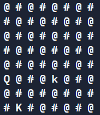
Posteriormente se muestran los posibles movimientos en el tablero de la reina blanca
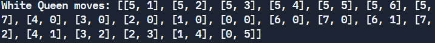
Finalmente se muestran los posibles movimientos del rey negro y su estatus tanto en jaque, como en jaquemate
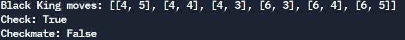
LINK REPLIT Capstone Proyect
The Game
Fecha de Creación: Dic 2020
Descripcion:
Este juego fue creado como parte del servicio becario.
Se trata de un juego de decisiones que simula la Liga Mx, con el fin de que el jugador pueda clasificar al mundial
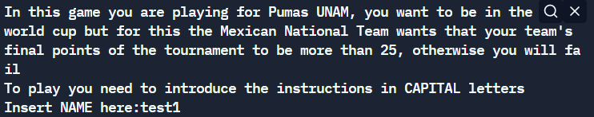
Se simula cada jornada y al llegar al partido correspondiente se muestran las decisiones posibles, se tiene un minimo de dos oportunidades por cada partido.
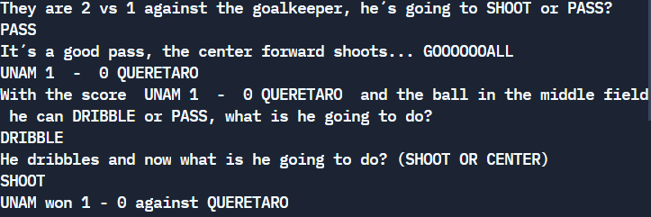
Ademas cada jornada muestra los resultados de cada equipo asi como una tabla de puntos
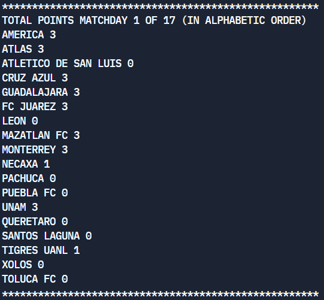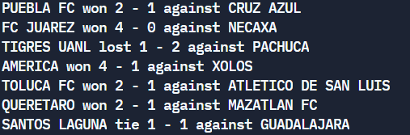
Al final de las 17 jornadas se muestra la tabla de puntos final, mas tu resultado, ya sea que seas elegido para el mundial o no.
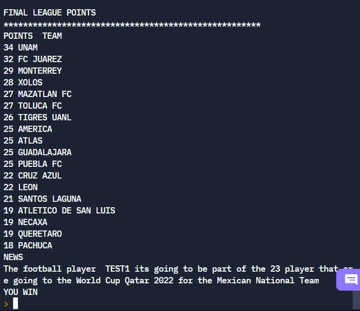
LINK REPLIT TheGame
Unity
Fecha de Creación: Feb 2022
Descripcion:
Este trabajo lo utilizamos como la introducción a Unity, lo que hice fue generar aleatoriamente 50 esferas y un cubo de colores igualmente aleatorios
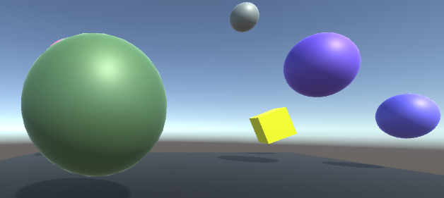
Para crear esto utilizamos diferentes funciones de unity, ademas de programar un poco para que los objetos tuvieran la masa, coordenadas, y localización.
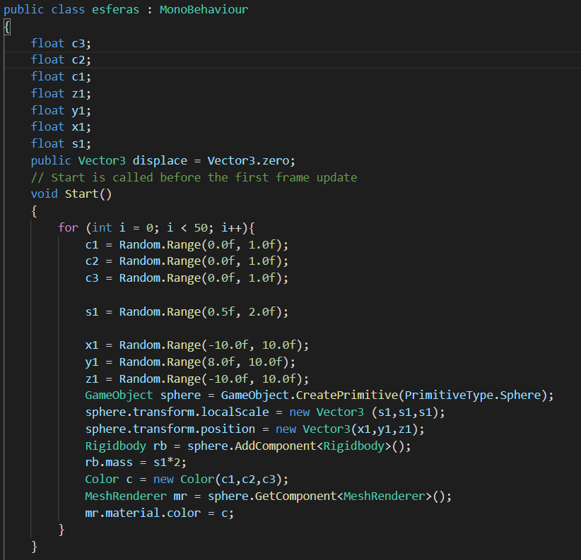
Ademas vimos como crear assets y de esta forma le dimos propiedades de rebote al suelo asi como color
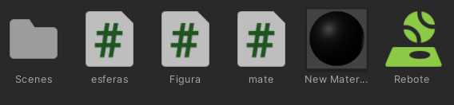